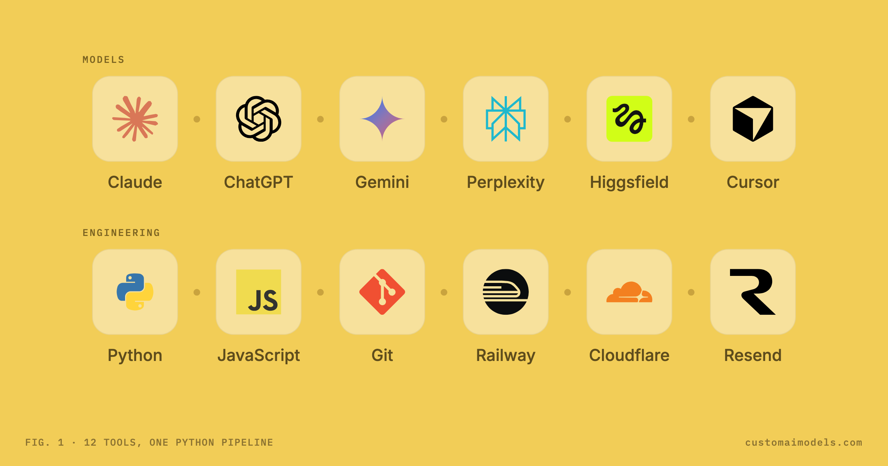

Custom AI Models
Custom AI Models Yeriko Vargas · Founder, Custom AI Models · Oct 2026
Yeriko Vargas · Founder, Custom AI Models · Oct 2026I get asked which AI we use. The honest answer is 12 tools, and none of them is in charge. Six are models: Claude, ChatGPT, Gemini, Perplexity, Higgsfield and Cursor. Six are engineering: Python, JavaScript, Git, Railway, Cloudflare and Resend. What's in charge is a Python script. It decides which tool gets called, with what input, and what happens to the answer before anyone sees it.

Decoupling deterministic logic from LLM orchestration architectures
Most AI projects start from the chat window and work outward. Someone gets a great answer from a model, then tries to build a product around that moment. We go the other way. I write the pipeline first: read the input, clean it, decide, act, record. A model only gets a slot in that line where judgment is actually needed, the way you would call any other function.
In practice a model call is a subprocess. Python builds the prompt from real data, runs claude -p (or another model's API), asks for JSON back, and parses it. If the JSON doesn't validate, the step fails loudly instead of passing a paragraph of prose down the line. There's no magic prompt that says "send the email." A user clicks a button, the click fires a trigger, and the trigger runs a fixed, predictable process. Somewhere in the middle of that process, a model may write the draft.
Programmatic exit code and JSON schema validation hooks
This is the lesson that cost us the most, so it goes first in every build. A tool that exits with code 0 has only told you it didn't crash. It hasn't told you it worked.
We learned it on our own skill installer. It marked a research skill as ready the moment the skill's health check exited cleanly. Then the skills kept failing in use. When we finally read what the health check actually reported, only 4 of its 16 channels were live. The installer had trusted the exit code and never read the report. The fix took one change: parse the tool's own JSON output, channel by channel, and mark each one live or dead on its own. The planner that recommends routes now only sees the channels that work today.
An exit code of 0 tells you the tool didn't crash. It doesn't tell you the tool did its job.
The same rule applies to models. A model that says "done" has made a claim. Python's job is to check it: does the file exist, does the page return 200, does the number match the source. If a check can be written as code, it is written as code, and it runs every time.
A gate before anything ships
This website is built the same way. The pages live in 6 source folders. run.py --bundle copies only the public parts into 1 folder, run.py --seo checks that bundle, and only then does Git commit it. Railway deploys from the main branch, and Cloudflare sits in front for DNS and redirects. Nothing reaches production by hand.
The check is a plain Python script with a progress bar. It reads the sitemap, opens all 7 public pages, and compares canonical URLs, robots rules, internal links and structured data. Any critical problem exits with a non-zero code, and the commit never happens. On its first run it caught a real bug that earlier manual audits had missed: a public portfolio page was being served with a "do not index" header it had inherited from a private area of the site. No model found that. A boring 1-line header check did, and it's been in the gate ever since.
The most valuable code in an AI system is often the part with no AI in it.
Cheap where it can be, expensive where it must
Twelve tools would get expensive fast if every step went to the biggest model. So the pipeline decides the price of each step before it runs. Planning a large build happens in small passes on a fast, cheap model, and Python stitches the passes together into 30 to 40 steps. The expensive model is saved for the steps where a wrong answer costs more than the call. Before a heavy build starts, the plan shows its estimated cost, and the decision to spend stays with a person.
Anything deterministic never goes to a model at all. Checking a folder for new questions every 10 seconds, renaming files, moving data from raw to processed to exports, building a sitemap: all plain Python, zero tokens. That rule keeps the bill flat as the system grows, and it keeps the behavior the same on Monday as it was on Friday.
Clean up after yourself
A pipeline that calls outside tools has to own their lifecycle. I found a headless Chrome still running 2 hours after a screenshot test had finished: a resource leak. Nothing was broken, but nothing should have been running either. That probe now closes its browser when it exits, when it's interrupted, and after 45 seconds no matter what. The figure at the top of this page was rendered the same way: a Python script launched Chrome once, took the picture, and Chrome closed itself.
The same goes for data. Every project keeps three tiers, raw, processed and exports, and a cleanup function moves data forward and parks what is unused. Nothing gets deleted outright. A parked file comes back with its receipt if someone needs it.
What this buys a business
- You own the code. The pipeline is Python you can read, run and keep. If a model changes next quarter, you swap one step, not the system.
- Answers you can trace. Every step writes what it did and where the result came from, so a wrong answer can be found and fixed.
- Costs that stay flat. Models only run where judgment is needed. Everything else is code that costs nothing to run again.
- Checks before you see it. A step that can be verified is verified by code, every time, before it reaches your team or your customers.
The toolbelt will change. Some of these 12 tools will be replaced within a year, and that's fine. The pipeline around them, the checks and the habit of treating every answer as a claim, is the part we build to last.